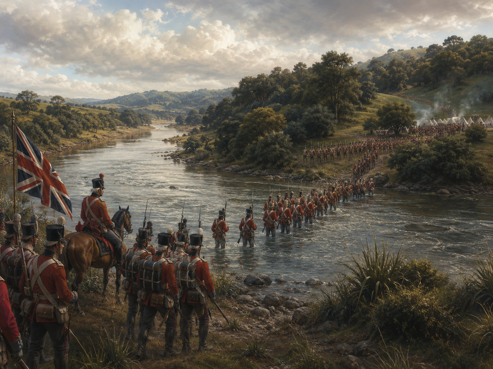
Crossing the Mangatāwhiri
On 12 July 1863, British troops crossed the Mangatāwhiri Stream. This was the boundary of Kīngitanga territory. Walton treats this crossing as the clear beginning of the invasion.
Explore the decisions that led to the invasion of Waikato, the major events of the war, and the consequences that followed.
This page draws heavily on historian Frank Walton's Wounds of the Land. Walton argues that the invasion of Waikato was a planned political decision, not an event that simply became unavoidable. Students are asked to examine that argument alongside the reasons given by Governor George Grey and the colonial government.
By the early 1860s, the Kīngitanga had become a strong political movement. Its supporters wanted to protect Māori land, strengthen unity and make decisions together.
Governor George Grey and other colonial leaders saw the movement differently. They worried that people might follow the Māori King instead of the Crown.
At the same time, the government strengthened its military position. The Great South Road was pushed south from Auckland. It allowed soldiers, weapons and supplies to move more quickly towards Waikato.
Frank Walton argues that this road was part of careful preparation for war. In his view, the government was not simply reacting to danger. It was preparing to invade.
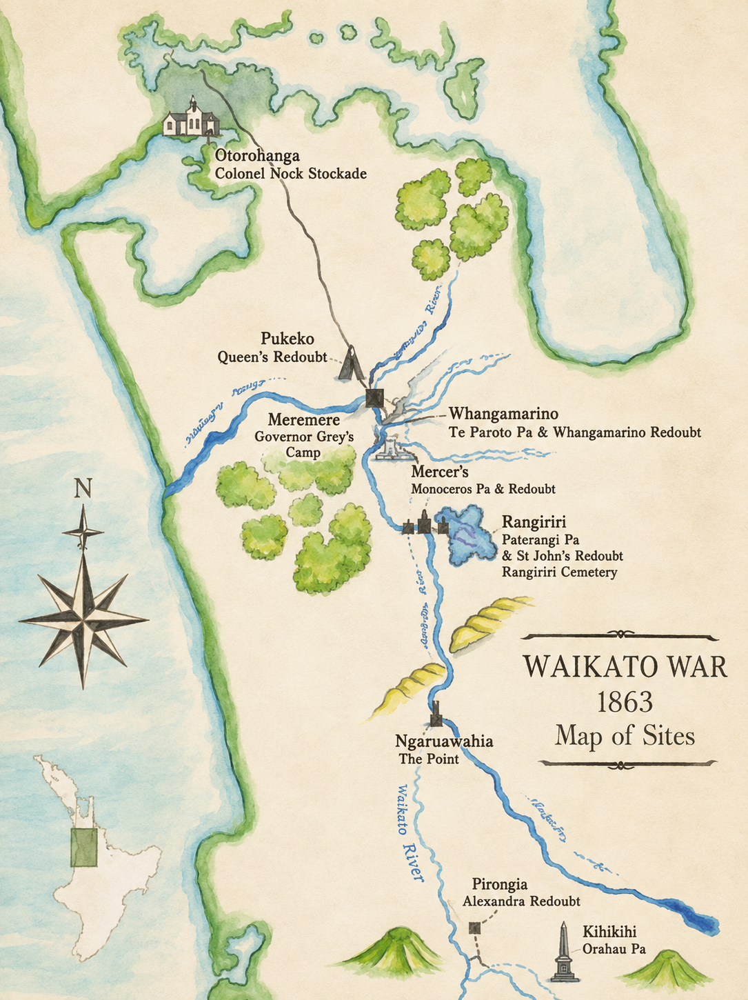
Flip each card to retrieve a key detail.
Choose the strongest summary of Part 1.
Grey claimed that Auckland was in danger and that military action was needed to protect settlers. He also presented the Kīngitanga as a challenge to the authority of the Crown.
Before the invasion, Māori living between Auckland and Waikato were ordered to swear loyalty to Queen Victoria or leave their homes. This placed enormous pressure on communities that had not attacked the government.
On 12 July 1863, British troops crossed the Mangatāwhiri Stream. The stream marked the northern boundary of the Kīngitanga's territory. Crossing it began the invasion of Waikato.
Walton argues that Grey made a choice. He points to the military road, the movement of troops and the ultimatum as evidence that the invasion had been prepared in advance.
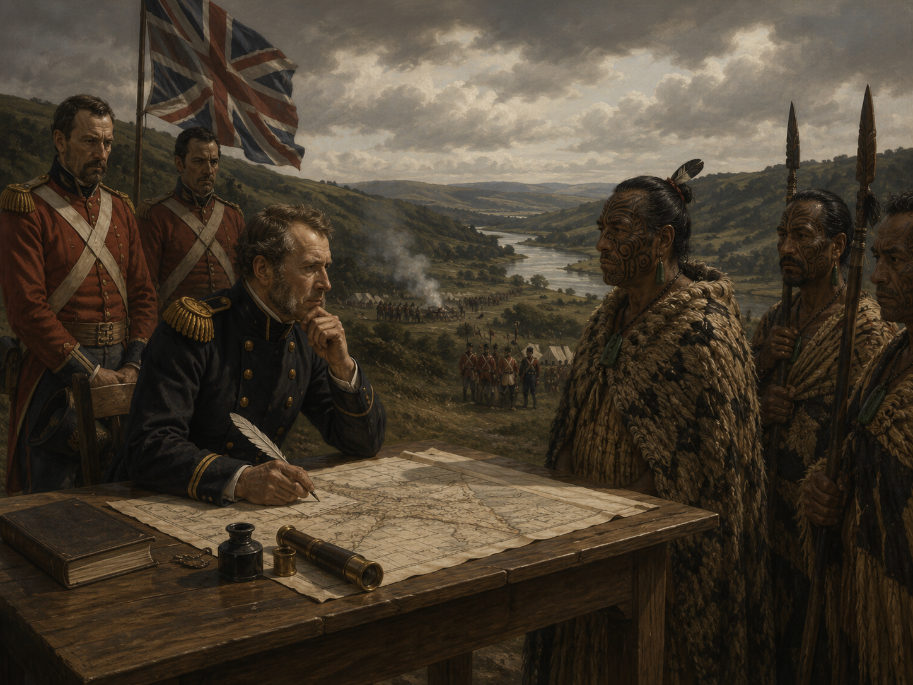
Sort each statement into the viewpoint it best represents.
Explain the historian's argument in your own words.
Scroll sideways through the story →

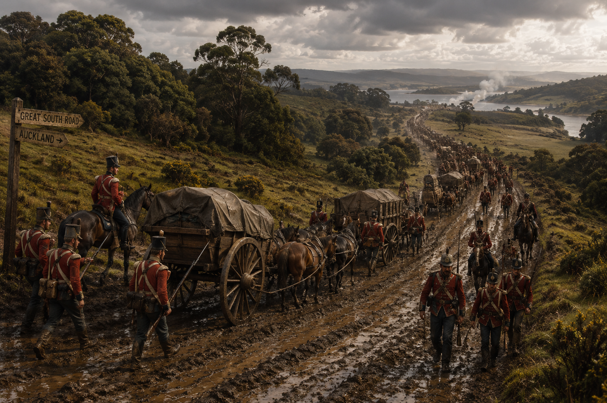
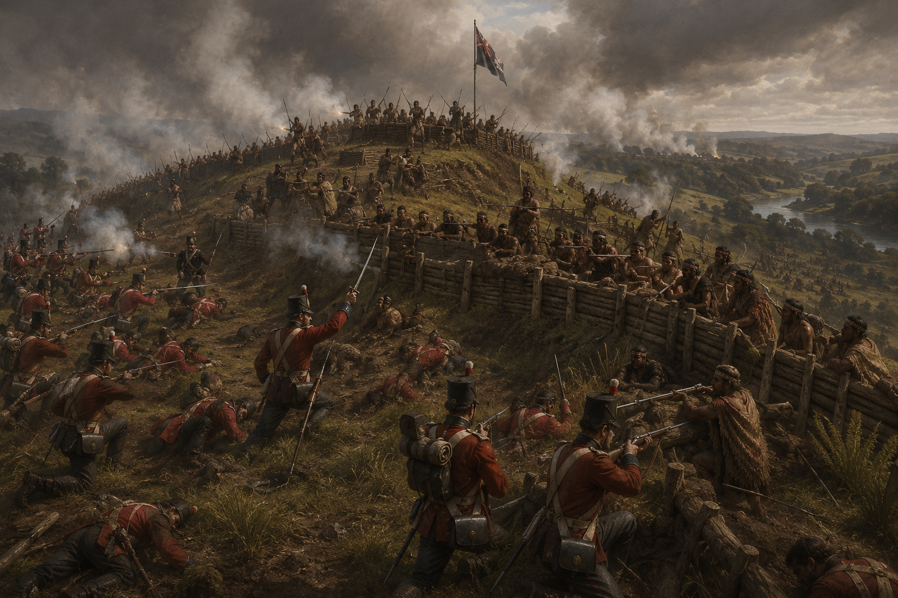
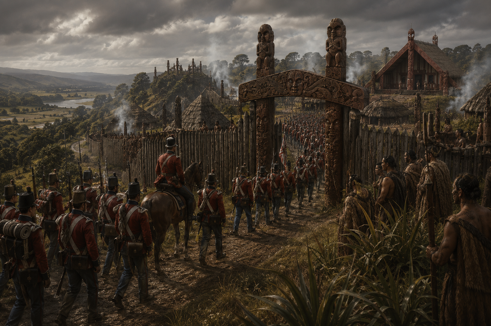
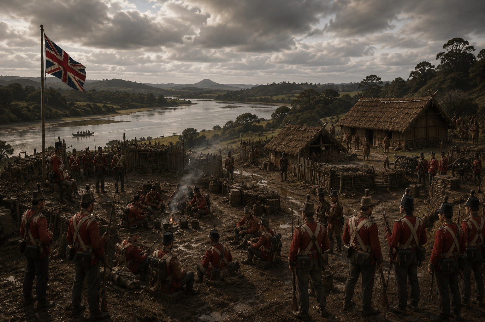
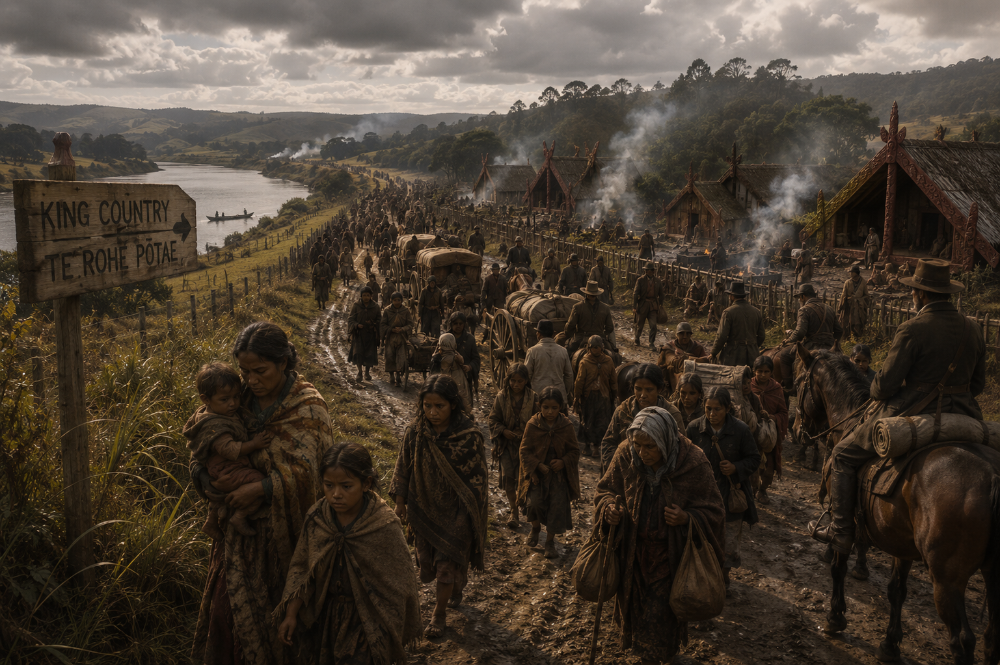
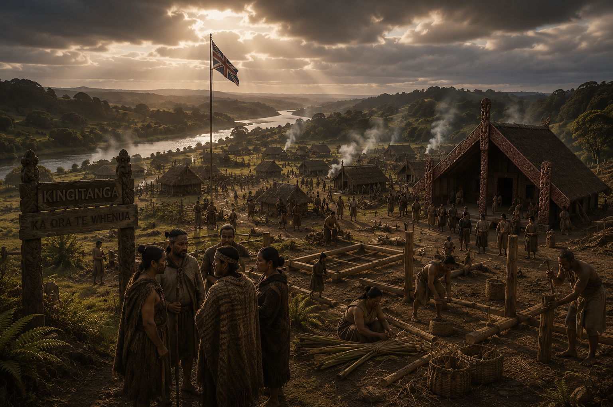
Select the events from first to last.
Use the scroller to support your answer.
The war did not end when the main battles stopped. Large areas of Māori land were confiscated by the government. Much of this land was later used for settlement.
Families lost homes, farms, food sources and places connected to their ancestors. The loss of land created long-term poverty and damaged communities for generations.
The government had won control of much of Waikato, but it had not destroyed the Kīngitanga. King Tāwhiao and many supporters withdrew south, where the movement continued.
Walton's title, Wounds of the Land, captures this lasting damage. The war wounded people, communities and the relationship between Māori and the Crown.
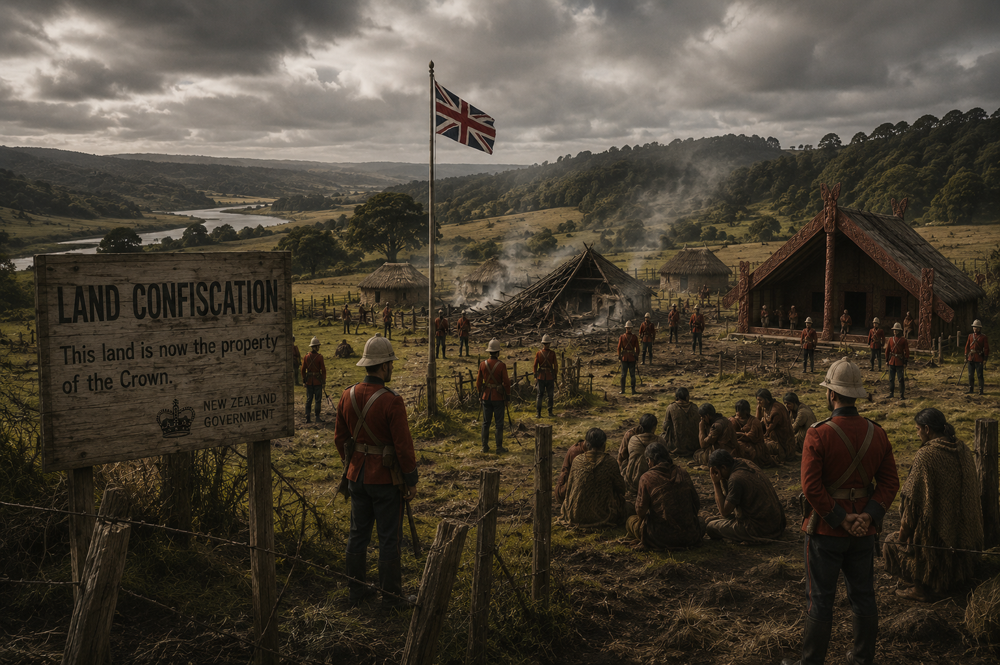
Choose the consequence that best matches the cause.
Think about Walton's choice of words.
Grey said he acted to protect Auckland and secure peace. Walton argues that the government had already decided to use military force and created the conditions for invasion.
The difference matters. If war was unavoidable, Grey can be presented as reacting to a serious threat. If war was a choice, responsibility shifts towards the government that prepared the road, issued the ultimatum and sent troops across the boundary.
Historians examine speeches, letters, military plans, roads, troop movements and Māori accounts. They ask which explanation best fits the evidence.
History is not only about remembering what happened. It is also about deciding how and why it happened, and who had the power to shape the story afterwards.
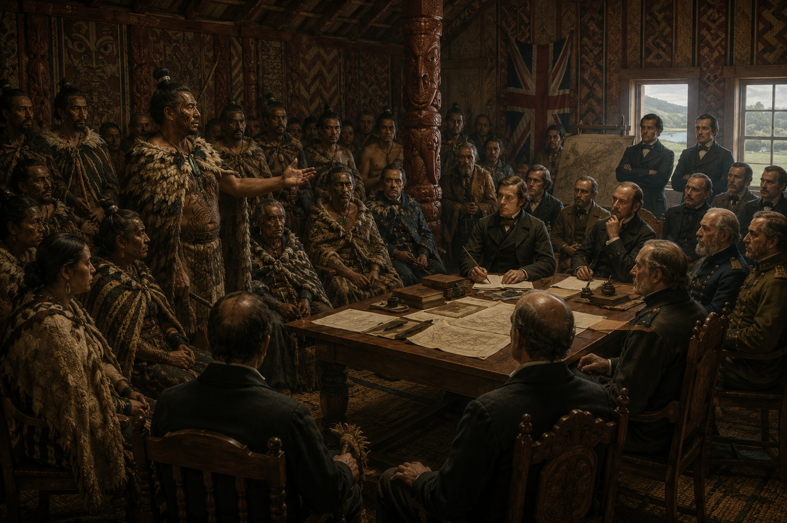
Select the strongest evidence for Walton's interpretation.
Use evidence from across the page.
Check the automatically marked activities, then download all answers as a CSV file.